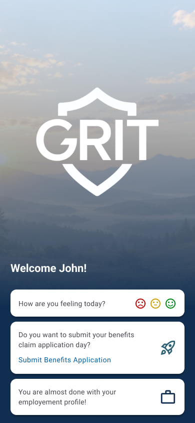

Context
GRIT (Getting Results in Transition) is a mobile application developed for the U.S. Department of Veterans Affairs to help veterans access resources for employment, housing, benefits, and social support during the transition to civilian life.

My role
As the sole UX designer, my work focused on redesigning the Benefits Claims experience within GRIT, adapting an existing VA web-based process into a clearer and more approachable mobile experience.
Problem
Veterans died by suicide each day on average in 2023.
61% of Veterans who died by suicide were not receiving VA health care during the final year of their lives.
*This data did not define the cause of the UX problem, but it reinforced the need to design the experience with greater clarity, sensitivity, and reduced cognitive burden.
The problem wasn’t simply about poor usability. There wasn't enough guidance for those who needed it most.
The current process expected users to identify the correct form, understand administrative terminology, and navigate a complex application flow with limited guidance.
Design Challange
How might we make the VA benefits claims process easier to understand for those who are going through stress?
Instead of assuming veterans would understand everything VA asks for, the experience needed to guide them through the process in plain language and give them clear next steps.
Help users find the right claim
Introduced a Guided Search for users who did not know which VA form they needed.
Simplify the process
Broke down the process into four clear steps: claim selection, basic information, supporting documents, and review & submit.
Make document upload easier
A mobile-friendly upload flow that allowed users to choose, photograph, review, and manage supporting documents before submitting.
Solution
The solution was to bring the VA benefits claims experience into GRIT without reducing access to any of the services or benefits available through the VA.
Instead of redirecting veterans to the VA website to sign in and go through a separate experience, GRIT provided a single mobile hub where users could find, complete, and manage their benefits claims in one place.
The goal was to keep the same VA services while making them feel clearer, more approachable, and easier to complete on mobile.

What I learned
One thing I learned from this project is that having complex and extra controls doesn’t always guarantee a better user experience. A better experience happens when things are simple and give users just enough tools to get their job done with confidence.